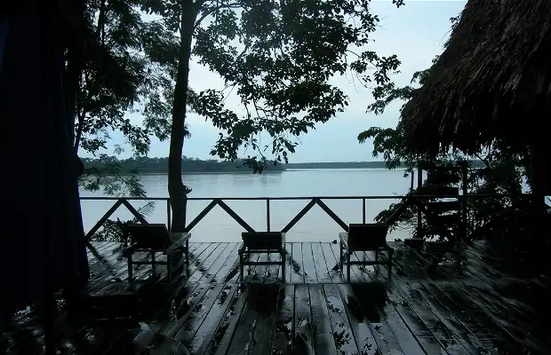
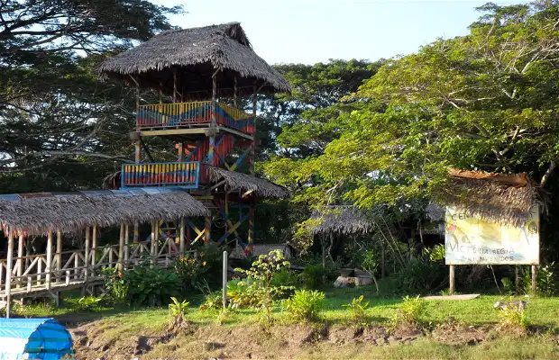
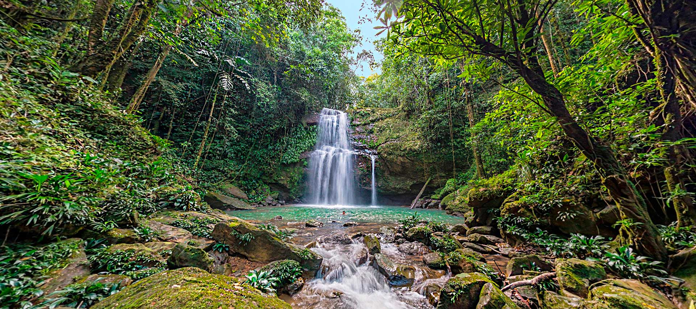
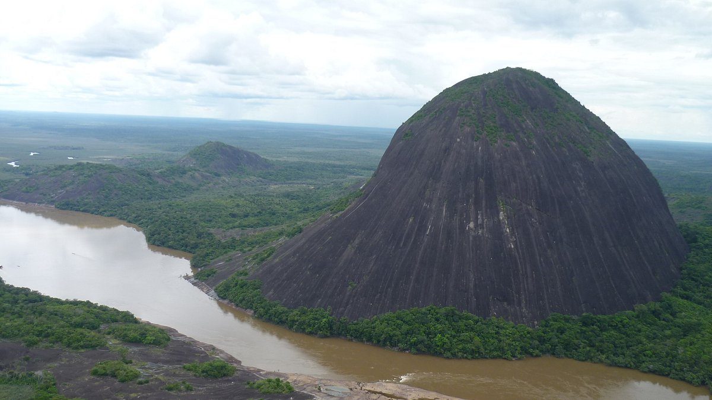
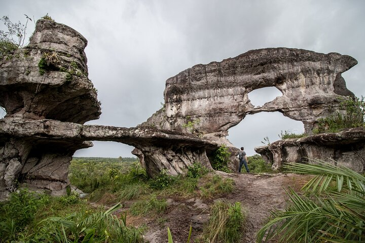
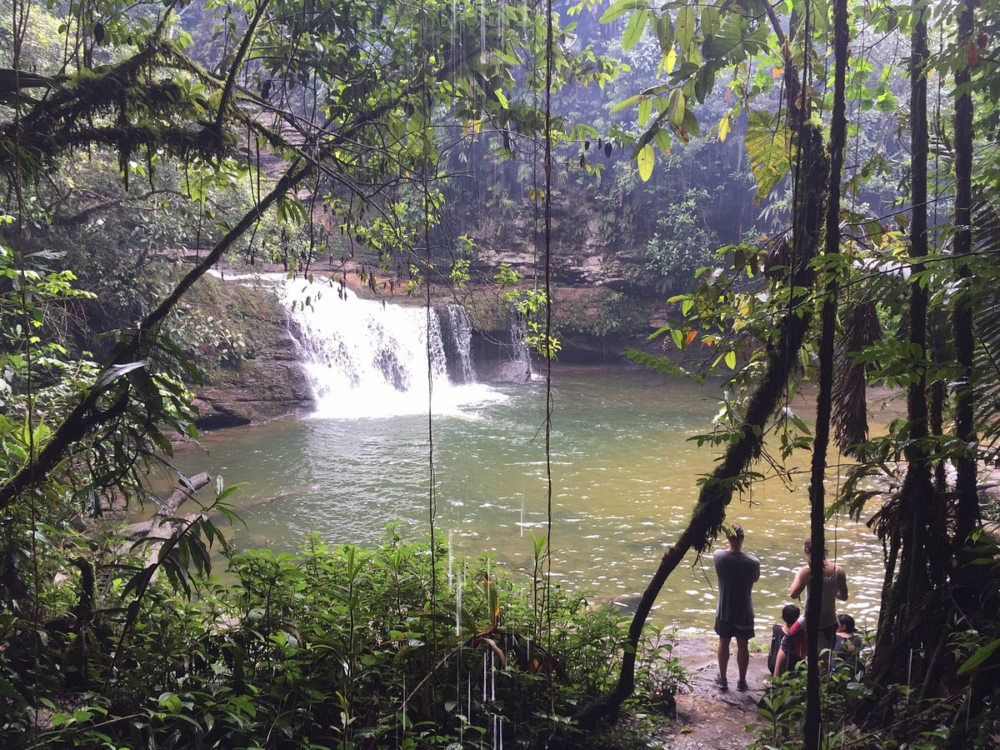

Region amazonica
Amazonas es magia pura y verde perpetuo; Amazonas es más que un atractivo destino turístico.
Amazonas es un verdadero estado del espíritu..
Departamentos De La Region Amazonica
- Amazonas (Leticia).
- Caquetá (Florencia).
- Guainía (Inírida).
- Guaviare (San José del Guaviare).
- Putumayo (Mocoa).
Sitios Turisticos Más Visitados De La Region Amazonica Por Cada Departamento
Amazonas (Leticia)

PARQUE AMACAYACU
Un lugar diferente donde sientes que te pierdes en la selva oscura, donde se evidencia la majestuosidad del río amazonas
con su gran caudal y sus vertientes con pirañas y delfines rosados.

RESERVA NATURAL VICTORIA REGIA
Permite admirar el loto más grande del Amazonas. Hacer el recorrido por este lugar se facilita gracias
a que sobre los lagos donde reposan estas enormes plantas, las Victorias regias, se han instalado puentes a poca distancia del agua, lo que hace posible verlas con detalle.

ISLA DE LOS MICOS
La compañía de Mike Tsalikys tuvo que cesar sus operaciones en la década de 1990.
Desde entonces, la isla se ha convertido en una atracción turística. Leticia ofrece viajes en barco
con un tiempo de viaje de alrededor de una hora. Hoy en día hay varios miles de monos en la isla, en su mayoría monos ardilla.
------------------------------------------------------------------------------------
Caquetá (Florencia)

RESERVA NATURAL EL DENUBIO
Es un sitio naturalmente bellísimo. Las cascadas perfectas y el río Bodoquero cristalino y tranquilo.
Un plan perfecto para conectar con la Amazonía en el piedemonte caqueteño.
CATEDRAL NUESTRA SEÑORA DE LAUDRES
Reconéctate con tu alma y tu familia en la Catedral de Florencia Caquetá , encuentra la paz
la sabiduría y el consejo que tanto buscas en la oración.
POSADA DE LOS ANAKIES, RESERVA ORNITOLÓGICA
Esta Reserva Natural es el espacio ideal para el contacto con la naturaleza, la observación de aves
la recreación y la investigación científica.
------------------------------------------------------------------------------------
Guainía (Inírida)

CERROS DE NAVECURE
Estos cerros son considerados uno de los principales sitios de interés turístico del departamento de Guainía
están ubicados justo en medio de la reserva indígena puinave de El Remanso, y aparecen representados en el escudo del departamento.
ESTRELLA FLUVIAL DE ORIENTE
La Estrella Fluvial de Inírida fue designada como sitio Ramsar el 8 de julio de 2014 debido
a su deversidad en aguas, especies de plantas y animales, a sus culturas indígenas y a sus ecosistemas singulares. La designación cubre 253 000 ha
PARQUE DE LA PRINCESA INIRIDA
Este parque ubicado en el barrio Zona indigena es uno de los primeros barrios del municipio de inírida
------------------------------------------------------------------------------------
Guaviare (San José del Guaviare)

SELVA ANCESTRAL DE GUAVIARE
Descubrir la versátil selva del Guaviare en la región norte del Amazonas con sus antiguas formaciones
rocosas y fascinantes especies animales con nosotros, le dará una visión que nunca pensó porque nuestros guías son locales y conocen muy bien su territorio.
TUNELES NATURALES
Es una reserva natural, se privilegia la sostenibilidad, la preservación del medio natural como cultural e histórico; donde tienes el contacto con la naturaleza .
RESERVA NATURAL EL DIAMANTE DE LAS AGUAS
Reserva Natural El Diamante De Las Aguas, cuya incansable tarea da cuenta de cómo conservar y proteger los bosques de la región
de tal forma que cientos de especies logren permanecer en un hábitat natural.
------------------------------------------------------------------------------------
Putumayo (Mocoa)

FIN DEL MUNDO
El fin del Mundo es una Reserva Natural con hermosas cascadas de aguas cristalinas,
ideal para las caminatas entre la selva, natacion en pozos naturales y la observación de especies nativas de flora y fauna.
PUTUMAYO ADVENTURES
Una de las Cascadas Imponentes de Mocoa, con mas de 65 metros de caida formando una gran piscina natural de aguas frias y cristalinas
RESERVA NATURAL PAWAY MARIPOSARIO
Cabe anotar que es la primera reserva de este tipo en el municipio de Mocoa, inicio siendo un mariposario.
ahora es una reserva, lógico sin perder el mariposario y la zoocria de ellas.
La reserva de la sociedad Civil es un centro de educación ambiental.